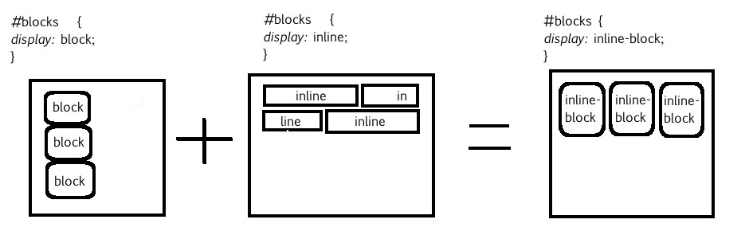

What does it mean to display inline vs inline-blocks?
- Block elements require their own line which means it can only move vertically
- Inline elements on the other hand can be placed on the same line adjacently and strictly move horizontally. 
- An Inline-block element is a combination of the two displays where the element behaves like a block but can be placed inline with other elements.